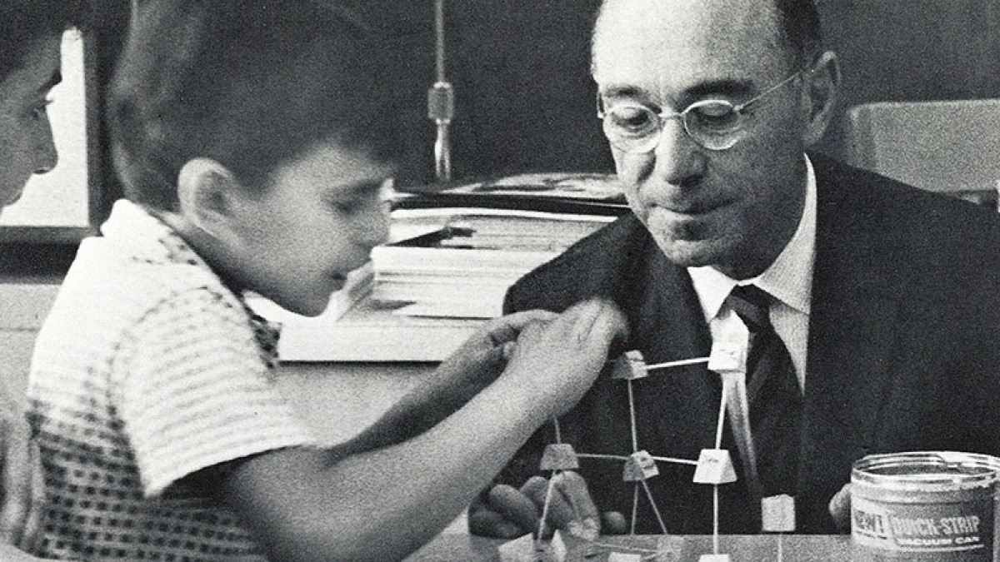
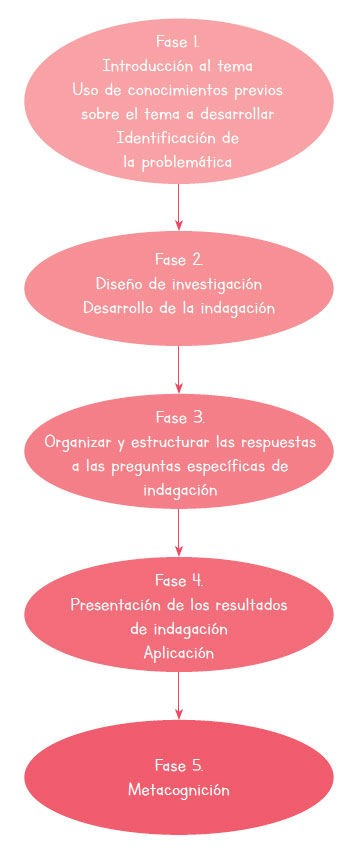
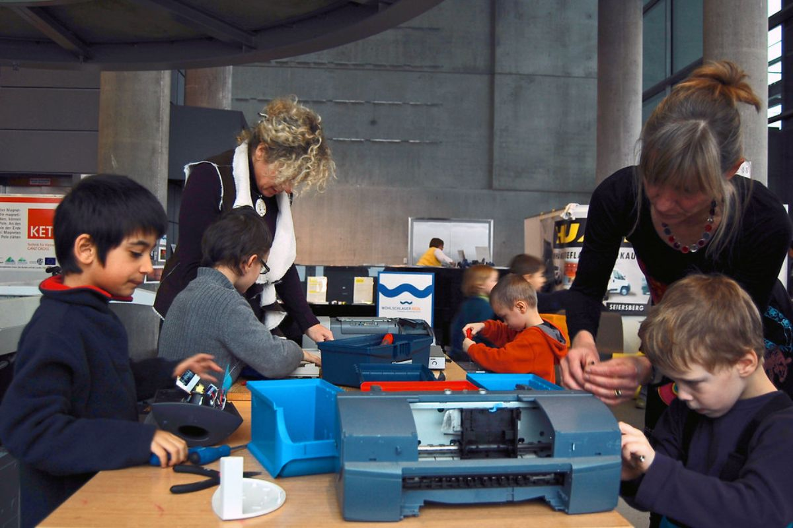
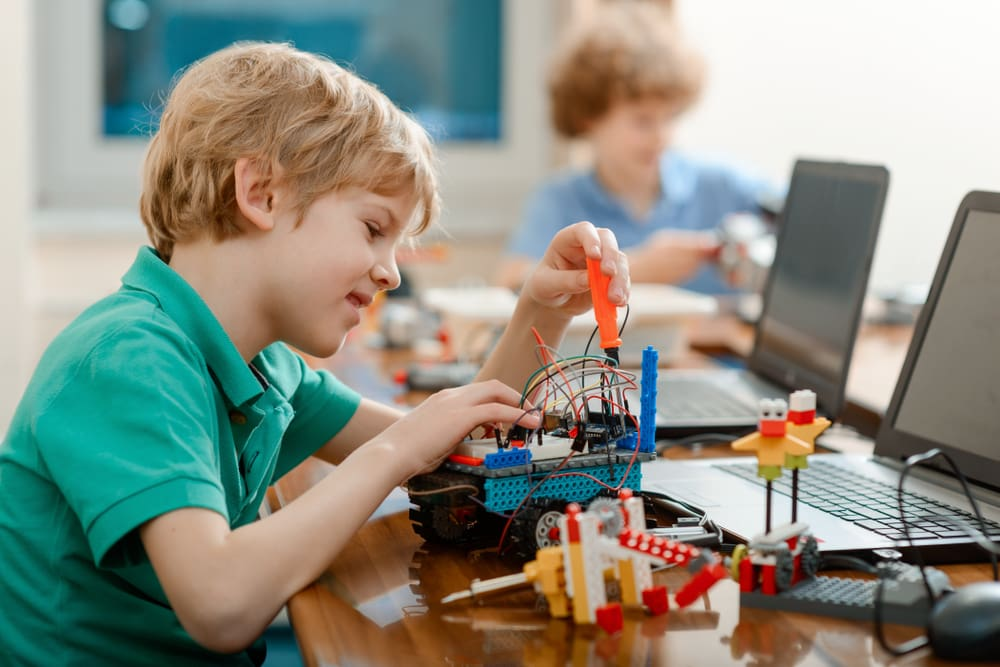

| Esta metodología tiene sus raíces en las ciencias y en el método científico, promovido por figuras como Jerome Bruner, quien enfatizaba la exploración y descubrimiento como caminos esenciales para el aprendizaje profundo. |  |
| En el aprendizaje basado en indagación, es clave plantear una pregunta o problema que guíe la investigación. Los estudiantes desarrollan hipótesis, realizan experimentos o investigaciones, y analizan los resultados. La evaluación se basa en el proceso de indagación y en la capacidad de argumentar y justificar las conclusiones obtenidas. |  |
| El docente es un guía que facilita el proceso de indagación, mientras que los alumnos son investigadores activos que formulan preguntas, desarrollan métodos de investigación y construyen su propio conocimiento. |  |
| Se requiere acceso a recursos como libros, dispositivos tecnológicos o laboratorios. Los espacios de trabajo deben fomentar la experimentación y la reflexión, con materiales que apoyen la investigación y el análisis. |  |
| La interacción en esta metodología se centra en el diálogo, la reflexión y el intercambio de ideas. Los estudiantes colaboran para plantear hipótesis y discutir resultados, enriqueciendo su proceso de aprendizaje a través de la crítica constructiva y la cooperación. |
Consulta información sobre otras metodologías de aprendizaje o regrese al menú
MenúAprendizaje Basado en Proyectos Comunitarios
Aprendizaje Basado en Problemas
Aprendizaje en el Servicio